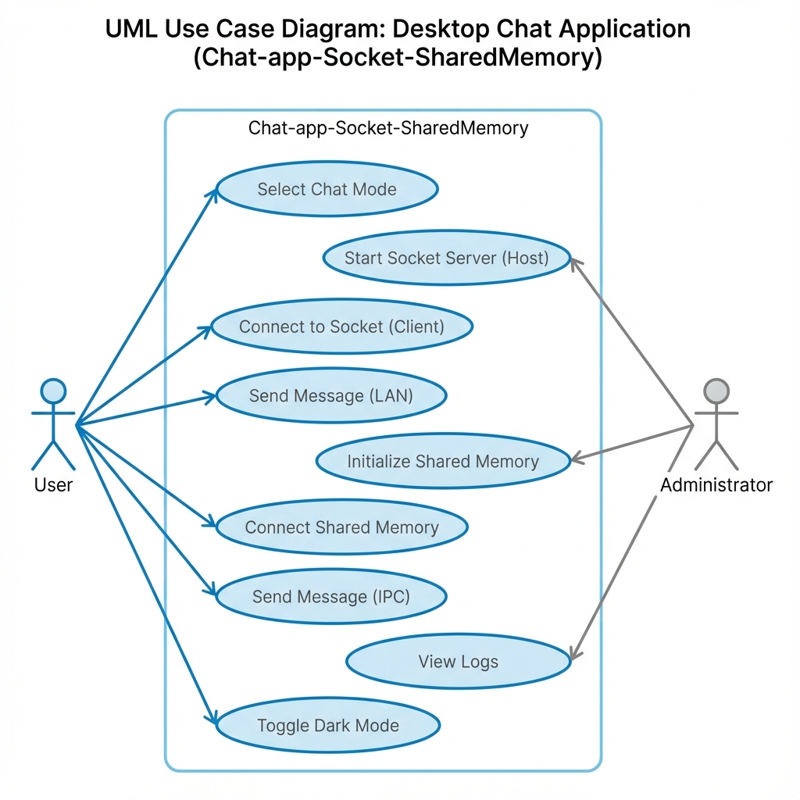

Chat-app-Socket-SharedMemory
Professional Documentation for the high-performance Windows desktop chat application.
1. Quick Start
To get up and running immediately:
-
CLONE: Retrieve the repository.
git clone https://github.com/AhmedGamal17-9/Chat-app-Socket-SharedMemory.git - PREPARE: Ensure MSYS2 UCRT64 toolchain is installed.
-
BUILD: Run the build script in the project root.
build.bat -
RUN: Execute the binary.
ChatSuite.exe
2. Prerequisites
Ensure your environment meets the following specifications before deployment or development.
- Windows 10 or 11 (64-bit recommended)
- MSYS2 (Win64) with UCRT64 environment
Required Packages
pacman -S mingw-w64-ucrt-x86_64-gcc mingw-w64-ucrt-x86_64-makeCRITICAL REQUIREMENT: You MUST add a "Folder Exclusion" in Windows Defender for the project directory. The application performs raw socket and memory data operations which may trigger false positives.
3. Development Setup
- Install MSYS2: Download from msys2.org.
-
Initialize Environment:
pacman -Syu -
Install Compiler:
pacman -S mingw-w64-ucrt-x86_64-gcc -
Navigate to Source:
cd /c/Projects/Chat-app-Socket-SharedMemory
4. Build Instructions
Automated build using batch script:
build.batExecute batch script from PowerShell:
.\build.batManual compilation via G++:
g++ -std=c++17 -municode -mwindows src/*.cpp -o ChatSuite.exe -lws2_32 -lgdi32 -lcomctl32 -static-libgcc -static-libstdc++Flags Explained
-mwindows: GUI application (no console)-municode: Full Unicode support-
-static-lib...: Portability (no DLL dependencies)
5. Runtime Usage
Mode 1: Socket Mode (LAN)
Server Setup (Host)
- Run
ChatSuite.exe-> Select "Socket Mode" - Role: "Server", Port:
8888 -
Click "Start" (Verify log:
Server listening...)
Client Setup (Remote)
- Run
ChatSuite.exe-> Select "Socket Mode" -
Role: "Client", IP:
Server IP, Port:8888 - Click "Connect"
Mode 2: Shared Memory (Local IPC)
Ideal for secure, offline chat between two users on the SAME machine.
- User A (Person A): Select "Shared Memory Mode" -> Click Start.
- User B (Person B): Select "Shared Memory Mode" -> Click Start.
- Use the "Active Writer" toggle to switch input control.
6. Use Cases

Small Office Team
Team needing secure LAN comms without external cloud services.
Air-Gapped Ops
Classified workstation with zero network footprint using Shared Memory.
7. Project Structure
ROOT_DIR/
├── build.bat # Windows Batch build script
├── ChatSuite.exe # Final production binary
├── README.md # Markdown overview
├── Documentation/
│ └── Documentation.txt # Reference file
└── src/
├── main.cpp # Entry point
├── Gui.h / .cpp # Win32 API rendering
├── Network.h / .cpp # Winsock2 wrapper
├── SharedMemory.h / .cpp # IPC implementation
└── Logger.h # Logging singleton8. Architecture
9. Configuration
Current version is GUI-first. CLI args are not parsed.
Planned (v1.1): config.ini support.
[Network]
DefaultPort=8888
AutoConnect=false10. Logging & Debugging
Logs are ephemeral/in-memory and shown in the bottom pane.
[14:20:00] [System] Application initialized.
[14:20:05] [Network] Socket created successfully.
[14:20:12] [Error] Connection Refused.11. Testing
Test A: Loopback Socket
Launch Server and Client both on 127.0.0.1 to test
TCP stack.
Test B: Concurrency Stress
Open two shared memory instances. Spam send on one while typing on the other to verify mutex/semaphore locking.
12. Security & Antivirus
IMPORTANT:
False positives may occur with Heuristic engines (Generic.Malware). Add an exclusion for the build folder.
Network Encryption: Current version is PLAINTEXT. Do not send PII over public networks.
13. Release & Distribution
-
Static Linking: Mandatory
-static-libgcc -static-libstdc++. -
Compression: Zip the
.exe(~2MB). - Signing: Recommended for avoiding "Unknown Publisher".
14. Contribution Guide
Branches: main (stable),
dev, feat/name.
Commits: Semantic styles (feat,
fix, docs, style,
refactor).
15. Troubleshooting
| Issue | Cause | Solution |
|---|---|---|
| g++ not found | Path missing | Run in UCRT64 shell |
| Connection Failed | Firewall | Allow ChatSuite.exe |
| Access Denied | Zombie Process | Kill all instances |
16. FAQ
Is internet chat supported without VPN?
Generally no. Socket mode requires direct line of sight (LAN or Port Forwarding).
Why is the file size ~2MB?
Static linking of standard libraries causes this, but ensures portability without installing redistributables.
17. Changelog
- v1.0.0 - Initial Release. Dual Mode (Socket/IPC), Native Win32 GUI.
18. Credits
The entire project was created by:
- Ahmed Gamal Moawad El-Bardisi
- Mohannad Khaled
- Omar Khaled
- Fathi Ahmed
- Mohab Waleed